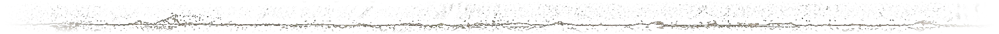

Director's Treatment
A film by Noah Conopask
The monster was born in her.
Someone woke it.
Images and references are for tone only and do not indicate cast or crew attachments.
Logline
After a drugged assault ends in a killing she can't remember, a drifting 26-year-old is hunted by the dead man's friends and by a dying detective, while the thing she inherited keeps getting out.
A note from the director
I have studied people my entire life through photography and image making, and Dawn is where I apply that to an entire cast, with Dawn at the center.
Two or three sentences in your own words: where this story comes from for you and Seth, and what you recognize in Dawn.
What interests me is someone completely falling apart, hitting rock bottom, and merging with the darkest parts of themselves to become a whole, actualized person who accepts who they are.
This document covers the script and how I would make it, along with my background as a director. Thank you for your time.
Noah
Dawn is elevated horror and psychological thriller in one body: a female werewolf story where the full moon is childhood trauma.
It is a horror film about a woman who survived her childhood and has to live with what came out of it. Underneath the genre, it is about accepting what you are made of.
Every supernatural event in the film traces back to something that happened to Dawn as a child.
Lost Highway and Fire Walk With Me set the tone inside the rooms, close and wrong. Heat sets the pursuit: a detective and the person he is chasing, each aware of the other.
Under the Skin and You Were Never Really Here show how to stay next to a character and hold back what happens to her. The supernatural stays tied to real places and real textures.
It is also funny. A drive-thru argument over breakfast hours almost ends in a stabbing, and a game of duck, duck, goose ends in a murder. The humor is deadpan, and it makes the violence hit harder.
Dawn was hurt as a child. When she is hurt again, something in her hurts back.
Victim becomes predator.
Two killers want revenge, and they want back a phone she took by accident. A detective with a month or two to live is following the bodies toward her. Dawn tries to get away from her past by going back to it. Her one real friend is an old woman in a rest home who is hiding something.
It plays like a nihilistic western with a suburban love story inside it.
Twenty-six and drifting, Dawn is at King of the Hammers, a desert race where thousands party among neon dune buggies. Three predators pull her away from the crowd: OxyGod, Cy, and Honey. They drug her, take her phone, and start recording.
Mid-assault, Shade rises in her and Dawn kills OxyGod. She barely remembers it. She comes to at a bus station sink, scrubbing blood off her hands, and vomits up his ringed finger. Not again.
Detective Nez works the scene. Terminally ill, with a month or two left, he has spent his career tracking a pattern of impossible killings stretching back decades.
Dawn tries to make a life on top of what she did. She works at a rest home caring for Iris, the closest thing she has to a mother. She goes back to Grayson, her ex. For the first time, they say they love each other. But she left the desert with the wrong phone, and Cy and Honey want it back.
Dawn reaches for something normal. At the mall she eats alone beside a happy family and drifts through a shop full of candles and bath salts, studying it like a place made for someone else.
She trades in Honey's phone at a store there. Cy and Honey track it. Dawn spots them and hides. They murder the clerk who took it.
A fire alarm empties the mall and they loot their way out. Nez arrives minutes behind them. In the cosmetics department he and Dawn lock eyes, predator sensing predator, before a scream pulls him away.

Cy and Honey connect Dawn to Iris. Iris keeps them talking over tea. She tells them about the daughter she abandoned while her cigarette smoke sets off the alarm, and they kill her for it.
Dawn is arrested at the murder scene. Cy and Honey abduct Grayson in his own truck and kill him minutes later. In the interrogation room, Dawn's reflection stops matching her, and Shade speaks in the voices of everyone who broke her, ending with her father's: "Why do you think your mother left."
A lieutenant hands Nez a DNA report. Iris was Dawn's mother. The dark gift came down through her, and she was an accomplice to Dawn's father, whose victims fill a file on Nez's wall. He goes to the evidence locker and takes one thing from her possessions: a single black puzzle piece.
Downstairs, Cy walks into the station and posts Dawn's bail in cash, peeling off a bill with blood on it.
Nez reaches the parking lot too late. Cy and Honey drive Dawn into the desert, to a bunker beneath their trailer where a camera and a green screen are already set up. They tie her to a table.
Then Shade rises. The screams disappear into empty country, heard by nobody.
Nez goes down into the bunker in the dark. He hears groaning and whimpering, and voices that no longer sound human.
He finds what is left of Cy and Honey, then Dawn, snarling and crying, somewhere between an animal and a girl. He holsters his gun and walks toward her.
He holds her until she is Dawn again. He gives her the puzzle piece and tells her Iris died protecting her. She can't be fixed, he says. None of us can. All that is left is to accept what we are made of.
Then he lets Shade take him, and this time Dawn does not fight it. He leaves his ID in the open and his gun full of bullets, so his death reads as line of duty and his widow collects the fund.
A bike messenger delivers an envelope to Nez's widow. It holds a check from the police widows' fund.
Dawn spits blood into the same bus station sink as before. Her hair is different now. A woman asks if she is okay and she says, sometimes. On the counter beside her ticket sits the puzzle piece.
She throws her phone away and puts her thumb out on the desert highway. A truck stops and the driver asks where she is going, the same words OxyGod opened with. Dawn considers.
The film depends on its characters. I want the audience to connect with each of them through their flaws, including Cy and Honey, who are monstrous and also funny.
Dawn is twenty-six and far too thin, and she kills people, even when she doesn't want to. She was born carrying something, and what was done to her as a child let it out. She is both victim and abuser. She wants a normal life and she is drawn to danger, and she swings between the two. Her past comes out through what she does in the present, and it points toward her own death. Or something worse.
We need an actress who can play 26 and hold the screen in near silence. She should not be conventionally sympathetic. The audience follows her because they can't look away. Reference performances: Rooney Mara in The Girl with the Dragon Tattoo, Jessie Buckley in Beast, Isabelle Adjani in Possession. Each plays a damaged woman with her whole body.
The dark gift, given a shape by childhood trauma.
She is who Dawn becomes when the past takes over.
Dawn sees her first in reflections and hears her as the voices of the people who hurt her.
You will watch a woman
become something else.
This is the image the audience came for. Shade happens in front of the lens. It is a way of filming transformation that audiences have not seen before.
There is no moon and no ritual. Shade rises when Dawn's defenses fail, and the transformation is cut as a montage of separate images.
Dawn shot underwater, hair and limbs dragging, the body moving at a speed it shouldn't.
Undercranked passes with the shutter left open so every gesture smears into the next.
Faces pulled through water and slit-scan until they stop resolving. Cut together, they read as a single event.
All of it is in camera, closer to a Goya painting than to a creature effect, and no one will be able to point to the effect.
Between those images we cut to the room Dawn is actually standing in. She goes very still and her voice drops into a register that isn't hers. She crosses the floor at a walking pace and starts, and she keeps going past the point where a person would stop. Nothing in the room has changed shape.
For most of the film Dawn is not present for any of it. She comes back afterward with wet hands and no memory of getting there.
The last time is different. She stops fighting and lets Shade come.
The dark gift
It runs in the blood.
Pain opens the door.
Something passes from parent to child and sleeps until pain wakes it. Dawn's came from her mother.
The film never explains it. A folder of killings spans decades, and family trees are pinned to a cubicle wall. Online, people say the killers are all related and that there are more every year.
Dawn is one case among many.
Nez is a detective somewhere between 40 and 55. He has spent decades following impossible killings, and the trail now leads to Dawn. He does not say a word we can hear until the last minutes of the film. He tracks well, he is an absent father, and he is looking for some kind of deliverance. He was something else before he was a detective. Nobody around him knows what, and the film never says. He is the film's clock. Dawn keeps repeating herself, and Nez is heading toward one ending.
We want an actor who can carry a film on his face and make a few lines count. The kind of American face that belongs on a highway at 3am.
Iris is an old woman in a rest home whose mind is starting to slip. She is sharper than anyone there gives her credit for.
Dawn's closest relationship is with her. Iris insisted on Dawn as her aide, and she holds a secret that could save Dawn or ruin her. She is also paying for something.
We want an actress of real stature, a face the audience already trusts, so that losing her hurts. She should be old enough to know what this woman is carrying.
Grayson is Dawn's on-and-off boyfriend. He has traded drugs for construction work and is trying to start over. He is familiar and kind, and he has a temper. She knows better than to trust him as a refuge, and she goes to him anyway.
We need an actor who makes it clear why she keeps going back to him: handsome in a worn-down way, with charm and a temper in the same face.
The approach is restraint. We show little and let the audience fill in the rest.
The script works this way. Nearly every killing happens offscreen. We cut away at the moment of violence and come back to what it left behind.
What the audience gets is sensation: pressure rising in a scene, a shift in the room, a face that changes through performance and not prosthetics. The body is the special effect.
Shot digitally and finished to look like film.
The opening.
The assault that opens the film follows the same rule. We stay inside Dawn's experience: sound drops out, the frame narrows, and time skips. The camera does not look at her the way her attackers' phone does. The audience leaves the scene with her disorientation.
Confirm: an intimacy coordinator is part of the plan for this scene and for the Grayson scenes.
Camera.
The camera is a witness. It stays locked and patient while Dawn is holding herself together, and goes handheld and close when she is not. We never announce the change.
Long lenses on the world, wide lenses on her face. The city is compressed and stacked, a place with no depth to escape into. Dawn is the only thing the frame is allowed to get close to.
The camera only moves for a reason, and once it starts it keeps going until the scene has changed. We do not shoot coverage for its own sake. Each setup is a point of view.
When Shade rises, the rules break. Frame rates drift, and the camera shakes loose from the scene it was watching.
Sound & music.
Sound is the first sign that something has changed. We hear Shade before we see her: the room tone drops out and low frequencies pile up. The mix alternates between dense noise and sudden silence, so the audience feels the change before they understand it.
I will write the score myself, as I did for Absorber and as I do under the name New Ruin. Music and sound design should bleed into each other, so a drone becomes score and a memory turns into noise.
The score sits against the source music the script calls for: nu metal trap at the race and classical in Nez's cruiser.
The sound is meant to put the audience inside Dawn's head.
Recurring images.
The lake is a dock at dusk, with Dawn looking down at her reflection while something rises from the lakebed. We return to it every time Shade comes.
Mirrors recur: a bus station sink, a glass table, a car visor, a wall of cosmetics. Each time, Dawn's reflection is harder to recognize.
Iris's all-black jigsaw is finished except for one piece. That piece is what Dawn carries out of the film.
The film ends where it began, at the same sink, with a stranger asking if she is okay. The first time Dawn says no. The last time she says sometimes.
The mirror scene.
The centerpiece is the interrogation room. Dawn is cuffed to a table facing a one-way mirror, and her reflection falls out of sync with her. Shade stands up in the glass and speaks in the voices of everyone who hurt her, warped like an old cassette.
On the other side of the glass, Nez sees only a girl alone, hitting herself. We cut between the two rooms and let both stand. That is how the film handles what is real: we show what Dawn sees, then what the room sees, and trust the audience to hold both.
The city is an anonymous sprawl of concrete and rust, and every surface looks stained.
The suburbs are no better: parched lawns, drawn blinds, and decay behind a tidy front.
Past both is the desert, empty and indifferent, where the worst of it happens.
The palette is steel blue and tobacco yellow, with a sickly green at the edges, the colors of a life that won't wash clean. Skin tones are slightly warmer than everything around them and drained by the dark.
Memories go to deep navy and silver, with fractured, warped surfaces like the lake. By the end a little warmth comes into the frame. It does not promise a good outcome. It suggests Dawn can finally look at herself.
Most of the story takes place in a few spaces we can control: a rest home, two apartments, a police station, a trailer with a bunker under it, and a stretch of desert highway. The desert costs permits and time.
The largest sequence is King of the Hammers. It is a real race with a real crowd, and we shoot it as documentary, at night with practical light, in the cars and costumes people bring anyway. A small unit embeds with the crowd, takes what the event gives us, and cuts it against controlled coverage of the actors. That is scale we do not have to pay for.
The race runs once a year, which sets our calendar: event dates / shoot window. Status of permission from the event organizers.
Beyond those spaces, the script calls for a working mall, a nightclub, a truck wreck, and a small fire at the rest home.
Shade comes from performance and in-camera technique. There is no creature and no extended VFX schedule.
98 pages, about 95 minutes. XX shooting days. Region. Budget range X to X.
The films that have defined horror's last fifteen years were mostly small, contained productions with a human wound at the center. Dawn fits that pattern. It spends on performance and in-camera technique instead of a creature, and its largest sequence comes from a real event.
| Film | Year | Distributor | Budget | Worldwide gross | Gross / budget |
|---|---|---|---|---|---|
| Get Out | 2017 | Universal | $4.5M | $255M | 57x |
| Lights Out | 2016 | Warner Bros. | $4.9M | $149M | 30x |
| Happy Death Day | 2017 | Universal | $4.8M | $125M | 26x |
| Insidious | 2011 | FilmDistrict | $1.5M | $100M | 67x |
| Talk to Me | 2023 | A24 | $4.5M | $92M | 20x |
| Sinister | 2012 | Summit | $3M | $88M | 29x |
| Terrifier 3 | 2024 | Cineverse | $2M | $87M | 44x |
| Barbarian | 2022 | 20th Century | $4.5M | $45M | 10x |
| The Witch | 2016 | A24 | $4M | $40M | 10x |
| It Follows | 2015 | Radius-TWC | $2M | $23M | 12x |
| Late Night with the Devil | 2024 | IFC | $2M | $16M | 8x |
| X | 2022 | A24 | $1M* | $15M | 15x |
Get Out. A first feature from a director known for other work. Its subject is trauma made literal.
Lights Out. Grew out of the director's own short. A family's damage takes a shape in the dark.
Happy Death Day. An original story, contained, with a young woman at the center.
Insidious. A haunting in one house, made for $1.5M.
Talk to Me. A first feature from outside the feature world, with grief driving the horror.
Sinister. A man working through decades of impossible killings, one piece of footage at a time.
Terrifier 3. Practical effects, an independent distributor, no studio behind it.
Barbarian. Contained locations, a basement, a mid-film shift in perspective.
The Witch. A first feature in which a young woman's inner life drives the horror.
It Follows. A threat that works as a metaphor, set in decaying suburbs.
Late Night with the Devil. In-camera, period-precise, the biggest opening in its distributor's history.
X. A woman at the center, rural Texas, and violence that holds off for most of the film.
Figures are reported production budgets and worldwide theatrical grosses, rounded; sources differ by a few million on several titles. Production budgets exclude marketing, and gross is not profit: theaters keep roughly half, and distribution and marketing costs come out before investors are repaid. *X's $1M budget is widely reported but disputed; some reports put it higher. These are the upside cases for the category and are not a projection of returns.
Audience
Dawn is for the audience that made Get Out and Talk to Me events: horror fans who come out for an original idea and talk about it afterward.
Rated R. Intended release path, for example: festival premiere, then a specialty theatrical distributor.
Director. Story by.
Noah Conopask has directed commercials for more than twenty years, for clients including Nike, BMW, HOKA, Red Bull, and Patrón. The work tells a complete story in a short time with no room for error. He is Emmy-nominated for main title design, and his work has been honored by the Clios and Ciclope. He knows how to run a set, work with actors under pressure, and shoot a specific visual idea the way he imagined it.
His style is precise, with deliberate movement and rhythm. He uses framing, color, and composition to shape emotion, and he has a strong eye for faces and the way people move.
His short film ABSORBER, which he wrote, directed, and scored, premiered at LA Shorts International Film Festival. It is the closest thing to Dawn he has made: interior experience turns into exterior horror, and the supernatural and the human are hard to tell apart.
Watch ABSORBER: link
Reel: noah.tv
Writer & Producer
After writing his first feature and setting it up at Scott Free, Seth worked with Werner Herzog on Benaroya Pictures' QUEEN OF THE DESERT and executive produced a series of features as Benaroya's Director of Development. He is in prep on a Kristallnacht film to be directed by Oscar winner Stefan Ruzowitzky and a no-dialogue thriller shooting next year. He has written multiple features and a TV pilot with Anonymous Content, and serves as EP on several features in development.
Contact
Name, email, phone for Noah and/or Seth